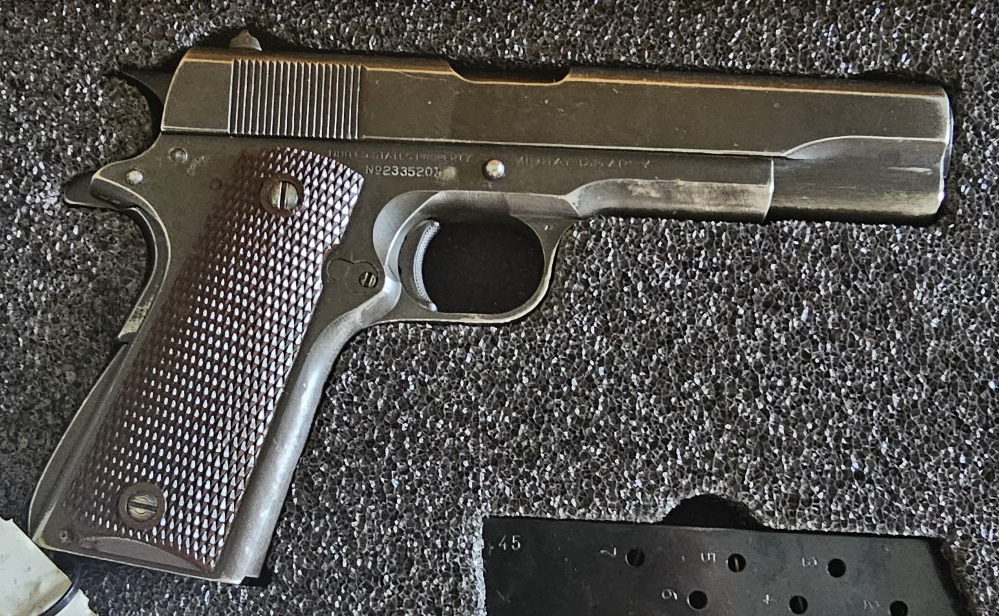

Colt M1911A1
Serial Number 2335201
Photo-documented late-war Colt M1911A1 research record preserving observed markings, component notes, CMP provenance, originality assessment, and open documentation items.

Collector Grade
Serial number 2335201 falls within late-war Colt production. Current photographs document a Colt frame, Colt slide, G.H.D. inspection mark, P proof, Colt barrel with square P proof on the lower lug, Coltwood-style grips, and late-war M1911A1 configuration features.
No arsenal rebuild markings have been documented in the current photo set. This assessment remains evidence-based and should be updated as additional photographs or paperwork become available.
Evidence Gallery


Why This Pistol Matters
Serial number 2335201 represents late-war Colt M1911A1 production during the final year of World War II. The pistol is important to document because it combines CMP provenance, a Colt frame, Colt slide, visible G.H.D. inspection context, square P barrel proof evidence, Coltwood-style grips, and no currently documented arsenal rebuild markings.
For the 1911 Database, this record serves as a flagship example of how individual pistols should be documented: photographs first, observations second, and collector conclusions clearly separated from confirmed evidence.
Component Review
| Frame | Colt frame, serial 2335201. Correct manufacturer and production range. |
| Slide | Colt rollmarks with Rampant Colt. Consistent with late-war Colt slide. |
| Barrel | Square P proof on lower lug. Consistent with late WWII Colt barrel. |
| Grips | Brown checkered Coltwood-style grips. Correct late-war style. |
| Hammer | Wide-spur checkered hammer observed. Appears correct from current photos. |
| Trigger | Short M1911A1-style trigger observed. Appears correct from current photos. |
| Mainspring Housing | Arched, checkered housing observed. Correct M1911A1 style. |
| Sights | Standard GI front and rear sights. No target-sight modification observed. |
| Magazine | .45 magazine present with witness holes and visible 45 marking. Baseplate maker mark still needs documentation. |
| Rebuild Marks | No arsenal rebuild marks documented in the current photo set. |
Originality Scorecard
Preliminary overall score: 57/60. This is a research aid, not a formal appraisal or authentication.
WWII Colt Production Marker
Serial number 2335201 sits late in Colt's 1945 M1911A1 production range.
Production and Historical Context
Production
Serial number 2335201 was manufactured during 1945, the final year of World War II, within late Colt M1911A1 production.
Inspector
G.H.D. refers to Brigadier General Guy H. Drewry, associated with wartime inspection of M1911A1 pistols.
Wartime Context
Colt was producing M1911A1 pistols alongside other wartime contractors including Ithaca, Remington Rand, Union Switch & Signal, and Singer.
Collector Interest
Late-war Colt examples are desirable when they retain correct frame, slide, barrel, small parts, finish, and documentation.
Provenance Timeline
1945
Manufactured by Colt during late WWII M1911A1 production.
Service
Military service history unknown; pistol remains a U.S. military-marked M1911A1 example.
CMP
Released through the Civilian Marksmanship Program.
Archive
Documented in private collection and archived in the 1911 Database.
Open Documentation Items
- Dedicated left trigger guard stamp close-up.
- Dedicated right trigger guard stamp close-up.
- Top of slide proof mark close-up.
- Magazine baseplate and spine markings.
- Barrel hood and chamber area markings.
- Interior slide markings.
- Clear bore condition note.
Research Notes
Research method: This record separates confirmed observations from collector conclusions. Serial range supports late-war Colt production, but serial range alone is not treated as proof of originality.
The current assessment is based on frame, slide, inspector mark, proof marks, barrel lug marking, visible small parts, grips, finish consistency, CMP provenance, and the absence of documented arsenal rebuild markings in the current photo set.